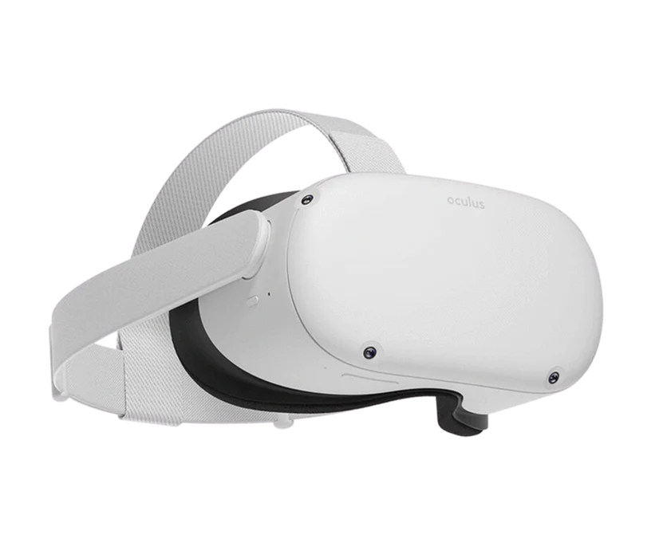
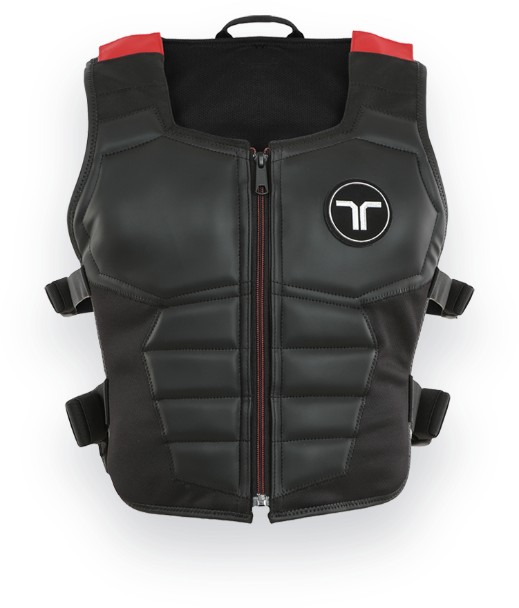
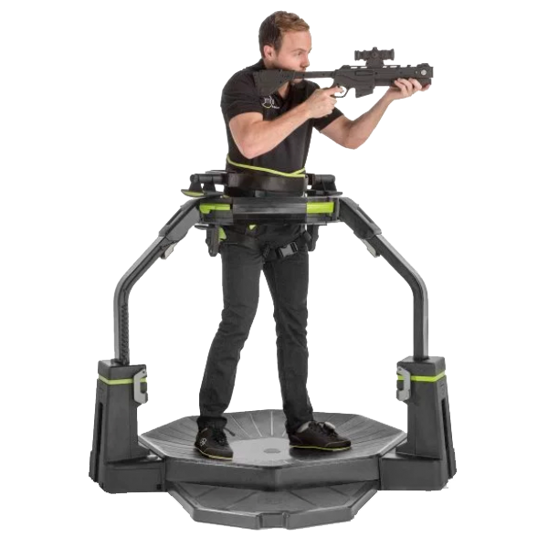

Індивідуальне завдання 3
Метавсесвіт
Апаратне забезпеченняАудіо та візуальнеПристроями для аудіо та візульного занурення у метавсесвіт можуть бути як звичаqний смартфон, так і окуляри (шоломи) віртуальної реальності або навіть лінзи віртуальної реальності ТактильнеДо тактильних приладів занурення у метавсесвіт можуть віднести як костюми віртуальної реальності на все тіло чи "тактильні" жилети, так і окремі елементи такого костюму, наприклад, рукавичкиі. Рухомі доріжкиДля повного занурення у метавсесвіт треба також і рухатися у ньому (коли користувач фізично рухається то і його аватар рухається). Для цього використовуються рухомі доріжки, бігові доріжки, платформи для віртуальної реальності. Творці метаcвітівНа даний момент кілька компанії заявили про намір створити свої метасвіти.
Економіка
Метавсесвіт дозволить відкрити нове дихання для сучасної економіки не тільки тим що
буде показана персоналізована реклама, котра до речі може також мати
геоконтексну прив'язку
до місцезнаходження аватара у метавсесвіті,
але і тим що виробники одягу, меблів, прикрас, електроніки та інших речей будуть
мати можливість продавати свої продукти у метавсесвіті,
й також це підштовхне до продажів у реальному світі.
Продаж одягу для персоналізації персонажів і зараз дуже популярний та прибутковий
бізнес для комп'ютерних ігор, а в метавсесвіті
це Окрім того метавсесвіт дає новий поштовх до використання криптовалют, nft та інших цифрових активів. Наприклад, 25 листопада 2021 року Decentraland оголосила про найбільший в історії продаж віртуальної землі за рекордні $2,4 млн. Придбана дочірнєю компаніє Tokens.com Metaverse Group ділянка віртуальної землі знаходиться в районі «Fashion Street» на карті Decentraland, Tokens.com використовуватиме її для проведення цифрових модних заходів та продажу віртуального одягу для аватарів. Взагалі, за оцінками компанії Grayscale, у найближчі кілька років річний виторг метавсесвіту досягне $1 трлн, і цей сектор складе сильну конкуренцію Web 2.0. Події у метасвітахУ жовтні 2021 аукціонний дім Sotheby's запустив платформу цифрового мистецтва під назвою Metaverse. На маркетплейсі пропонуватимуть ретельно відібрані NFT. Компанія Meta, яка належить Марку Цукербергу, заявила про введення функції особистого простору у Horizon Worlds та Horizon Venues. Це сталося після скарг на домагання у віртуальній реальності. Пізніше метавсесвіт AltspaceVR також ввів межі особистого простору, які автоматично включені для аватарів. У січні 2022 бренд H&M отримав власний концепт віртуального магазину метавсесвіті. У лютому 2022 року у метавсесвіті Decentraland пройшло перше весілля. У церемонії брали участь представник суду, свідки та близько 2 тис. гостей. Компанія Samsung презентувала нову модель Galaxy S22 одночасно в реальному світі та у метавсесвіті у 2022 році. Фанати могли взяти участь у події в цифровій копії магазину 837X на віртуальному майданчику Decentraland. Репер Snoop Dogg заявив про бажання перенести лейбл Death Row Records до метавсесвіту, також він випустив альбом у вигляді NFT. Компанія Snap, якій належить відомий застосунок Snapchat, планує організувати віртуальний концерт зі співачкою Дженніфер Лопес. Глядачі зможуть переглянути виступ в якості аватарів Bitmoji. Victoria's Secret планують відкрити свої представництва у метавсесвіті. Для цього компанія подала 4 заявки на реєстрацію нових торгових марок. У лютому 2022 JPMorgan першим з великих банків відкрив своє представництво у метавсесвіті. Мережа ресторанів швидкого харчування Mcdonald's планує відкрити власні заклади у метавсесвіті. Там компанія буде приймати замовлення з доставки їжі додому. Mcdonald's вже подала в Відомство з патентів та товарних знаків США 10 заявок на реєстрацію товарних знаків що стосуються віртуальних харчових продуктів та напоїв, зокрема NFT та керування віртуальним рестораном онлайн з доставкою додому. Сеул та Дубай стануть першими містами метавсесвіту - протягом кількох найближчих років всі урядові, соціальні, туристичні та інші сервіси будуть надаватись у метавсесвіті. У культуріЛітература
Кіно
Детальніше читайте у "Вікіпедії" |
|||||||||||||||||||||||||||
|
Ще більше цікавої та корисної інформації про метавсесвіт, віртуальну реальність, криптовалюти та nft дивіться у записі вебінару мого батька.
Якщо цікаво – ось блокнот з кодом, який він писав в ході вебінару, а тут – колекція створених під час вебінару NFT. |
|||||||||||||||||||||||||||